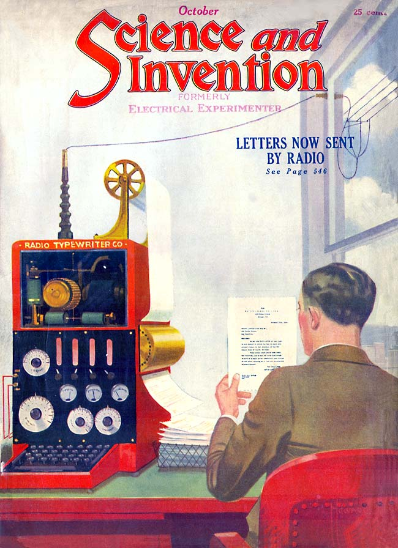
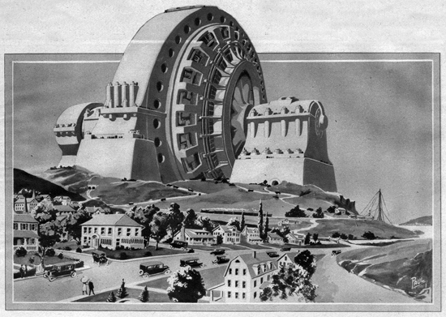

Human Progress
*Science and Invention*, vol. 10 no. 6 , October 1922
DRAFT: Please do not share without permission of the author. Typeset versions in web | pdf | doc
WHEN we contemplate the future progress of the human race, as viewed in the light of our present civilization, a beautiful picture is stretched before our eyes. We see the millennium just ahead, man emancipated; in other words, paradise on earth.1
If the progress of the human race should go along unabated as it has during the last one hundred years, Science, in five hundred years, would lift the race up to a point where it never stood before. The world then would be a place that even our most fervid imaginations could not conjecture today.
But to the student of history, all does not seem so rosy, and if we really contemplate history carefully we become a good deal more pessimistic in our views as to the future of human progress. We need not look back centuries ago. All we have to do is remember the last world war, which retarded human progress a great deal. Without wishing to be over-pessimistic, we might well tremble for the future of the race, if another such war is let loose among us before a great while.
Our present civilization is but a spider web in strength, and it does not take much to break it. Our economic and our social life is such that a complete cessation of any great industry might cause chaos. Thus, for instance, if some agency should suddenly destroy our transportation means, such as our railroads, automobiles, and ships, for as short a period as one year, civilization would be plunged inmmediately into a condition akin to that of the Dark Ages. The penalty of our present civiliztion is that it makes us soft and without resistance. We are not as hardy as our forefathers used to be. The recent war proved this conclusively, where millions of people died, simply because they were not used to the hardships which they were suddenly called up on to face.
On the other hand, if we read the past aright, we also know that as a rule history repeats itself. The Egyptians, as well as the Romans, were a highly cultured and civilized people. The Romans build the most wonderful roads in the world, which have lasted for two thousand years and upon which traffic passes every day in Europe at this very minute. They have known how to build and how to do things. The Egyptians were just as highly cultured and, perhaps, if we leave out scientific achievements, they were on a higher plane of civilization than our own. It is a mooted question today how they built their pyramids, and no architect will venture to say how they did it with the tools and facilities at their command in those days. We have never been able to embalm as well as the Egyptians, and we might recall dozens of other examples, but the point we wish to make is that it did not last. The Egyptians, as well as the Romans, disappeared, and left the world plunged into gloom, barbarism, and the dark Middle Ages. We might cite many other examples of great peoples who had reached seemingly the pinnacle of civilization, only to be destroyed and plunged into darkness.
In the light of these facts, will any one dare to affirm that our present world may not experience a similar fate in the future? If we take this fate for granted—and it is highly probable—should we not follow the Egyptians’ example and build our own monument that would outlast the most severe ravages, just as the pyramids have outlasted not only the fury of the elements, but the destructive powers of man as well?
One of the things that has helped to create our present civilization is the electrical current, and specifically the dynamo. Why should we not build the representation of a 1,000-foot generator in concrete, of such proportions that it would not be easily destroyed, either by man or by the elements? In the interior passages, following the Egyptian example, we might engrave upon the granite walls the principles of modern electricity, so that if our world should be plunged into darkness those that follow would read what has gone on before.2
Of course, there are many other suggestions that come to mind to make such a monument not only a lasting one, but a practical one as well. for one thing, if the base of the generator were solid rock there might be great vaulted passages, which would contain a complete electrical museum. A representative piece of apparatus could be placed behind glass in air-proof vaults, illuminated by electricity, either from the outside of the corridor, or from the vault within. The more air-proof we make such walls, the longer the apparatus will last. It is questionable if we should place one of our present-day electric motors in a vault that was not protected against moisture and air currents that it would last more than one hundred years. The insulation would rot very soon, and once rust started its work there would not be left much for future generations to see of this particular motor. It is this way with most of our present-day apparatus and appliances; unless they are placed almost in a vacuum they do not last long.
It is a well-known fact that our present-day books are very short-lived; even if they are kept in an up-to-date library printed books will certainly not last more than five hundred years. The ravages of small micro-organisms, as well as the destructive qualities of modern ink, make our books only of a passing interest. For that reason, anything placed in our electrical monument should be, preferably, engraved upon stone in as few words as possible. After all stone or granite is the only material that will outlast centuries.
-
 ↩
-
Henry Adams, confronted with the “supersensual world” of new electrical apparatuses on display at the 1900 Great Exposition in Paris, saw the dynamo as a “symbol of infinity”:
As he grew accustomed to the great gallery of machines, he began to feel the forty-foot dynamos as a moral force, much as the early Christians felt the Cross. The planet itself seemed less impressive, in its old-fashioned, deliberate, annual or daily revolution, than this huge wheel, revolving within arm’s length at some vertiginous speed, and barely murmuring – scarcely humming an audible warning to stand a hair’s-breadth further for respect of power – while it would not wake the baby lying close against its frame. Before the end, one began to pray to it; inherited instinct taught the natural expression of man before silent and infinite force. Among the thousand symbols of ultimate energy the dynamo was not so human as some, but it was the most expressive.
@adams_education_2002 [1918], 286.
Gernsback literalizes Adams’s elevation of the dynamo as the symbol of modernity by proposing the construction of a gigantic, concrete monument to the dynamo. It is illustrated elsewhere in the issue:
In connection with our editorial of this month, we show on this page a monument dedicated to the age in which we are living. Electricity, more than anything else, has made our present civilization what it is, and if this civilization should be wiped out by war or some other cataclysm, nothing would remain to tell what Electricity did for the race during the past century.

Though Gernsback hopes that such a monument would allow future civilizations to “read what has gone on before,” he perhaps misses an important point raised by Adams. These new machines amounted to a “break of continuity,” an “abysmal fracture for a historian’s objects.” Adams, himself a historian, foresees that the historian or archaeologist of the future would thus have to use an entirely new set of methods to understand the technological infrastructures of the past, an endeavor that no concrete monument would help, no matter how massive:
No more relation could he discover between the steam and the electric current than between the Cross and the cathedral. The forces were interchangeable if not reversible, but he could see only an absolute fiat in electricity as faith. … A historian who asked only to learn enough to be as futile as Langley or Kelvin, made rapid progress under his teaching, and mixed himself up in the tangle of ideas until he achieved a sort of Paradise of ignorance vastly consoling to his fatigued senses. He wrapped himself in vibrations and rays which were new, and he would have hugged Marconi and Branly had he met them, as he hugged the dynamo; while he lost his arithmetic in trying to figure out hte equation between the discoveries and the economies of force.
@adams_education_2002 [1918], 286-7. ↩
Grant Wythoff, editor
grant.wythoff@gmail.com

This work is licensed under a Creative Commons Attribution-NonCommercial-NoDerivatives 4.0 International License.